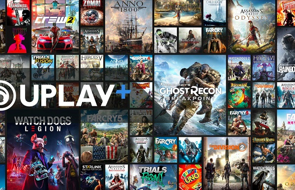

UPLAY Uplay merupakan layanan distribusi digital, manajemen hak digital, permainan video multipemain, dan komunikasi untuk berbagai platform yang dikembangkan oleh Massive Entertainment. Uplay dipakai secara eksklusif untuk mendistribusikan permainan video Ubisoft. Ada pula permainan video pihak ketiga yang dijual di toko digitalnya serta menggunakan teknologi Uplay.
Manfaat dari Uplay Sama Seperti Steam, pengguna Uplay juga erhubung dengan Steam dan tdapat bergabung ke dalam komunitas para pemain game, dimana dalam komunitas tersebut siapa pun memiliki kemungkinan untuk membahas suatu topik pembicaraan yang tentu berhubungan dengan game, misalkan mekanisme, cara bermain, produk game, dan lain sebagainya. Anda juga dapat memberikan komentar dan membuka topik pembicaraan.
Jenis Game dalam Uplay 
Beberapa daftar Game Terbaru dari UPLAY • Assassins Creed Oddyssey • Rainbow Six Siege • Tom Clancy Wildlands • Tom Clancy's The Division 2 • Tom Clancy Wildlands Breakpoint • The Crew 2 • Watch Dogs Legion • Far Cry New Dawn • Dan masih banyak lagi tentunya
Contoh Pembelian Game di Steam : 1. Download Uplay di sini 2. Jalankan software dan log in pada Uplay Launcher 3. Cari game yang diinginkan melalui menu yang tersedia atau menggunakan fitur “search” 4. lihat harga game yang diinginkan dan isi saldo Uplay Wallet atau menggunakan Code game yang sudah dibeli di marketpalce lain. 5. klik reedem dan download gamenya 6. Mainkan gamenya Note : Uplay dan Steam dapat terhubung melalui game buatan UPLAY yang dijual di STEAM.